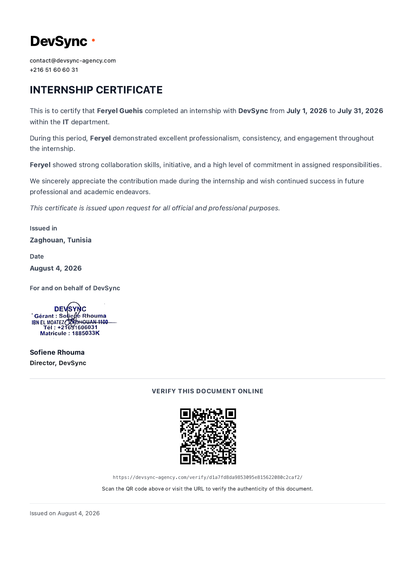

Portfolio
Mes projets
Des applications que j'ai construites de A à Z.
Site web statique dédié à la sensibilisation, l'information et la mobilisation autour du cancer du sein, ciblant principalement un public féminin tunisien et francophone.
Moteur de recherche mobile permettant d'indexer et de retrouver des informations multimédias. Développé avec Flutter et un backend Python/FastAPI, déployé sur Cloudflare Pages et Render.

Plateforme e-commerce complète permettant à des vendeurs de publier leurs produits et à des clients d'effectuer des achats en ligne : catalogue, panier, commandes, paiement simulé et gestion des stocks.
Plateforme web de déclaration et recherche d'objets perdus et trouvés en Tunisie. Fonctionnalités : signalement, chat en temps réel, matching intelligent et administration.
À propos
Étudiante en
Génie Logiciel
Étudiante en 2ème année Génie Logiciel et Systèmes d'Information à la Faculté des Sciences de Monastir. Passionnée par le développement web full-stack, je combine créativité et rigueur technique pour construire des applications innovantes.
Expérience
Mon stage
Une expérience en entreprise qui m'a permis de me professionnaliser.

Stage d'un mois au sein du département IT chez DevSync à Zaghouan (1 – 31 Juil. 2026). Collaboration sur des applications web et montée en compétences techniques et professionnelles.
Certifications
Mes certifications
Contact
Travaillons ensemble
Un projet en tête ? Je suis disponible pour des collaborations, du freelance ou des opportunités full-time.